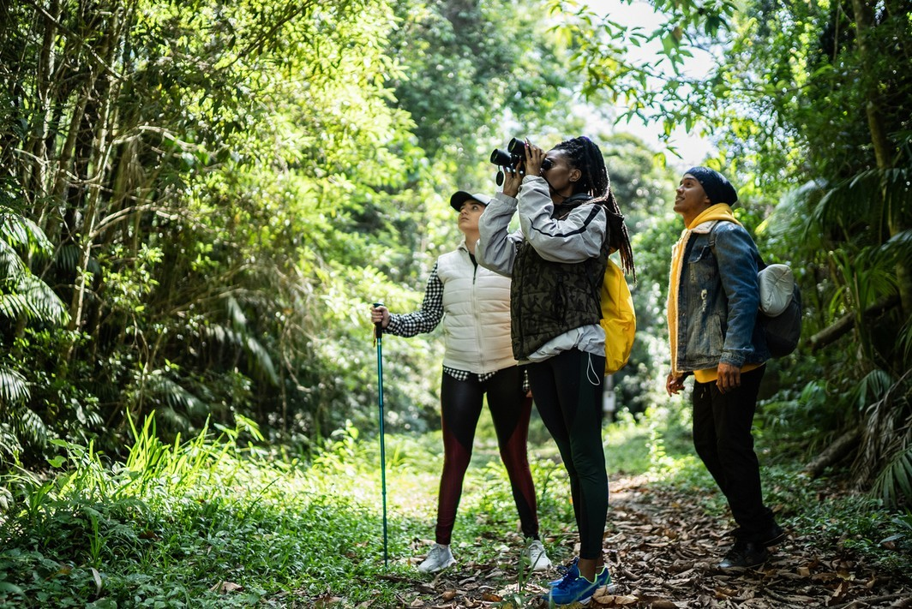

Prompt quality matters
Clearer and more specific prompts produced more relevant and actionable sustainability guidance.
PORTFOLIO PROJECT 01
Your Guide to Sustainable Adventures
This project marks the very first artefact on my landing page and an early milestone in my journey into the world of AI.
Try EcoTravelPROJECT OVERVIEW
EcoTravel is an AI-powered chatbot designed to help users make more environmentally responsible travel decisions. It supports greener choices by offering guidance on sustainable tourism, eco-friendly transportation, and responsible travel habits.
THE STORY
This project marks the very first artifact on my landing page and an early milestone in my journey into the world of AI. I created it using prompts in ChatGPT.
Before this assignment, I was firmly part of the “AI skeptics club,” unsure whether these tools were worth the hype. That perspective changed almost instantly.
In a matter of seconds, AI produced code that would have taken me far longer to write myself, a result made even more impressive by my well-documented dislike of coding. That alone was nearly enough to convert me on the spot. Almost.
In all seriousness, building this bot demystified how AI can be used in practice. What started as an assignment quickly became curiosity, encouraging me to explore more use cases, ask better questions, and engage with AI in a hands-on way.
EXPERIENCE IT
You may already be acquainted with EcoTravel if you clicked the chatbot button on the homepage. If not, now is a good time to say hello.
Try EcoTravel
REFLECTION
Clearer and more specific prompts produced more relevant and actionable sustainability guidance.
The model effectively structured environmental concepts into accessible explanations.
Applying the Empathize, Define, Ideate, Prototype, and Test framework helped ensure the chatbot addressed real user needs.
This project showed how AI can support environmental awareness and informed decision-making.
NEXT STEP
Sustainable travel choices help preserve the planet for future generations. EcoTravel is designed to make responsible decisions easier and more accessible.